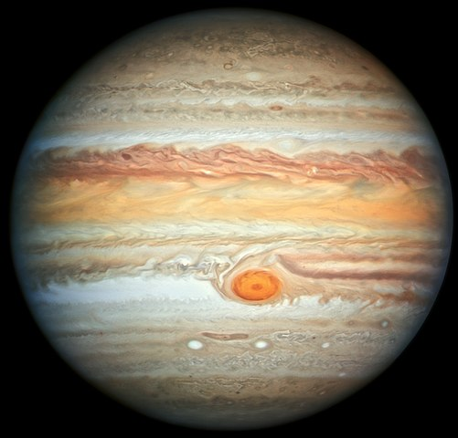

Юпитер
- Юпи́тер — крупнейшая планета Солнечной системы, пятая по удалённости от Солнца. Наряду с Сатурном, Ураном и Нептуном, Юпитер классифицируется как газовый гигант.Перейти к разделу «#Юпитер среди планет Солнечной системы»
Планета была известна людям с глубокой древности, что нашло своё отражение в мифологии и религиозных верованиях различных культур: месопотамской, вавилонской, греческой и других. Современное название Юпитера происходит от имени древнеримского верховного бога-громовержца.Перейти к разделу «#Название и история изучения»
Ряд атмосферных явлений на Юпитере: штормы,Перейти к разделу «#Движение атмосферы» молнии,Перейти к разделу «#Молнии» полярные сияния,Перейти к разделу «#Полярные сияния на Юпитере» — имеет масштабы, на порядки превосходящие земные. Примечательным образованием в атмосфере является Большое красное пятно — гигантский шторм, известный с XVII века.Перейти к разделу «#Большое красное пятно»
Юпитер имеет, по крайней мере, 79 спутников[6], самые крупные из которых — Ио, Европа, Ганимед и Каллисто — были открыты Галилео Галилеем в 1610 году.Перейти к разделу «#Спутники и кольца»
Исследования Юпитера проводятся при помощи наземных и орбитальных телескопов; с 1970-х годов к планете было отправлено 8 межпланетных аппаратов НАСА: «Пионеры», «Вояджеры», «Галилео», «Юнона» и другие.Перейти к разделу «#Изучение Юпитера космическими аппаратами»
Во время великих противостояний (одно из которых происходило в сентябре 2010 года) Юпитер виден невооружённым глазом как один из самых ярких объектов на ночном небосклоне после Луны и Венеры.Перейти к разделу «#Орбита и вращение» Диск и спутники Юпитера являются популярными объектами наблюдения для астрономов-любителейПерейти к разделу «#Любительские наблюдения», сделавших ряд открытий (например, кометы Шумейкеров-Леви, которая столкнулась с Юпитером в 1994 году,Перейти к разделу «#Столкновения небесных тел с Юпитером» или исчезновения Южного экваториального пояса Юпитера в 2010 году)